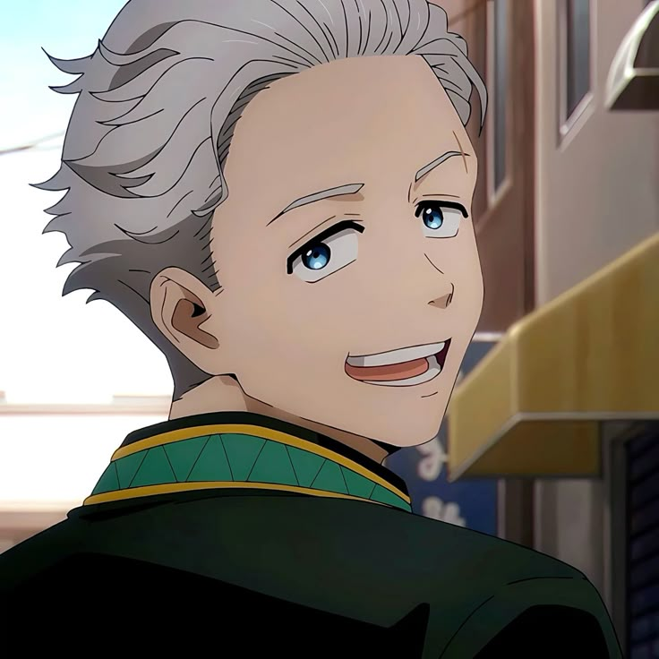

Joevenel D. Eurango Jr

Summary
I am a hardworking and dedicated individual with experience in web development and SEO
Education
- Bachelor of Industrial Technoly Major in Computer Technology
Work experience
Skills
- Problem-solving ⭐️⭐️⭐️⭐️⭐️
- Teamwork ⭐️⭐️⭐️⭐️⭐️
- Adaptability ⭐️⭐️⭐️⭐️⭐️
- Interpersonal Skills ⭐️⭐️⭐️⭐️⭐️
Others